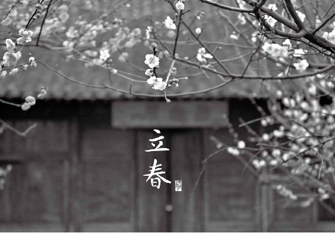
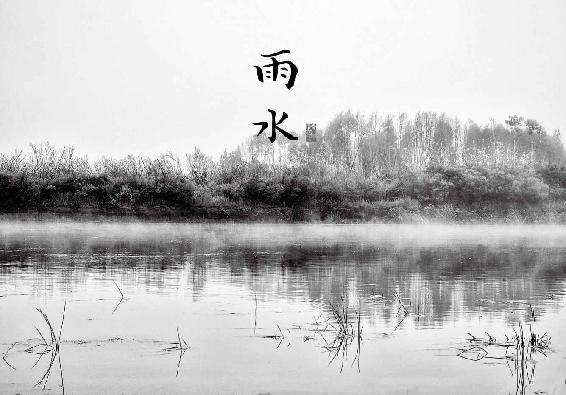

中医用五行（木、火、土、金、水）来配五季（春、夏、长夏、秋、冬）和五脏（肝、心、脾、肺、肾）。在代表五行的物质中，水、火、金、土都是无机物。只有木是有机体，是有生命的，所以木代表春天的“生”。
凡是属木的东西，它就有生命力，有往上生长的特性。树木的枝条很柔软，很容易弯曲，但它的天性是喜欢舒展的，如果强迫它弯曲就长不好，所以属木的东西喜欢舒展，而害怕被压制。
在人的五脏六腑中，肝和胆组成肝系统，它们主宰人体的生机，所以也是属木的。就像树木的枝条一样，肝胆之气需要生长和舒发，如果受到压制就会生病。
春天来了，肝系统要做好两件大事：一个是“生发”，另一个是“升发”。
开春时，我们要“生发阳气”。阳气如何生发？要靠肝来生发，由肝气来启动五脏的阳气。若是肝气虚，阳气就不足，人会感到怕冷、四肢无力、情绪低落。立春后，肝气逐渐增强，我们当顺其自然，不要去干扰这个过程，让它充分激发人体的阳气，才能促进人体的生长发育。“生发”，意味着“生生不息”。
春天我们如何帮助肝脏生发人体的阳气呢？一要靠“吃”，二要靠“动”。动则生阳。春天江河解冻，草木生长，在水边和植物多的地方，阳气最足。我们可以多去这些地方活动，吸收自然界的阳气。
而“升发”，跟肝气的运行方向有关：肝气是往上升的。在人体内部，气是按照圆周来运行的，有升才有降。肝气升发，推动人体气的运行，气血才能畅通。
肝气升发要有度，不及则会气血郁滞，过度则会肝阳上亢。人的情绪对肝气影响很大，所以我们在春天要特别注意调整心情。
如果情绪压抑，闷闷不乐，肝气就难以升发而郁结于胸，引起气血的瘀滞，或是化为内火（此时就需要清肝火）。如果情绪急躁，生气暴怒，肝气就会升发过度，使人血压升高、面红耳赤、头晕眼花，甚至中风昏厥。所以春天养生的一大重点就是“舒肝理气”。
中医很早就观察到，肝病先传脾，肝气过旺会克制脾的功能。所以春季我们不要补肝，而是健脾、补脾。
春天不是大补的季节，饮食应以排毒、抗毒为主。
春季饮食上养“生”的一个重点是：少吃酸味的东西。因为在五味中，酸味专入肝经，是补肝的。但春天偏偏不适合多吃酸味。为什么呢？因为春天我们不要补肝，而是“舒肝”。补肝就好比我们把一个房间的门窗都关上，这属于收敛，酸味就是收敛的。舒肝，就是我们把门窗打开，让里面的浊气排出去。这两者是完全不同的。
我们真正需要补肝的时候，是在秋冬季，为的是滋养肝血。而在春季，我们的身体需要的是舒肝、理气、排毒，必要的时候还需要“疏肝”，也就是疏通已经造成的阻塞。让肝气得以升发，同时把冬天潜伏在体内的病邪宣泄出去。如果补肝的话，肝气就无法舒发，无法排毒。所以除非是特殊治病需要，春季反而要少吃些酸的才好，以免收敛过度，把病邪关在了体内。
春天需要多吃的是甘味，因为肝气旺的时候容易伤脾，所以我们要用甘味来补脾。五谷杂粮全都带有甘味，特别是大米，所以春天可以多吃两碗饭。还有，很多蔬菜的根和茎也都是甘味的，比如莴笋。
肉类中，也有甘味的，比如猪、牛、羊、鸡、狗这五畜中，牛肉是甘味的。牛肉甘温入脾，可以健脾胃。还有鱼肉，凡是有鳞的鱼肉一般也是甘味的，比如鲤鱼和鲫鱼，都是健脾和胃的食物。
每个节气都有它的饮食重点，在后面的章节中会逐一说明。

立春，是在每年公历的2月4日、5日左右。此时，万事万物，包括各种各样的病毒也逐渐苏醒了。而冬天所受的风寒可能还残留在我们的体内，冬天吃的肥甘厚味又使我们的身体蓄积了内热。我们的身体是否有足够的抵抗力来防御呢？
立春时节，进补不宜，身体的首要任务是抗病毒。
二十四节气之始为立春，是在每年公历的2月4日、5日左右，它标志着春天的到来。立春的“立”字，是开始的意思，也就是说，春天开始了。二月初，也许在北方的朋友还感觉不到多少春天的气息，冰雪未融，地还很冷，还没有长草，树也没有发芽。但这只是表面现象，天地之气已经在悄悄启动了。
你看二月的北方即使是下雪，也跟冬天的雪不一样，是春雪了，大片大片的雪花，水汽很足。而天晴时，阳光晒在身上就有暖意。所以一到立春，我们就要开始按照春天的规律来保养身体。
在这冬天刚结束，春天刚开始的时候，冬眠的动物逐渐苏醒。同样的，各种各样的病毒也复苏了。而我们的身体是否有足够的抵抗力来防御呢？我们在冬天所受的风寒可能还残留在体内，吃的肥甘厚味又使身体蓄积了内热。这个时候，进补是不合时宜的，我们的首要任务是抗病毒。
怎样抗病毒呢？老祖宗早就帮我们选好了该吃的食物。南宋陆游有一首立春写的诗说得最详细：
蓼芽蔬甲簇青红，盘箸纷纷笑语中。
一饼不分空恨望，暮年知有几春风？
这里面讲了古人立春要吃的两样东西：一种是春饼，另一种是春盘。
吃春饼有什么好处呢？春饼里包的都是适合春天吃的菜，比如绿豆芽、韭菜等，把它们放到春饼里面卷在一起来吃，为的是补充人体的生发之气。豆芽是发芽的东西，而在春天，凡是发芽的东西，都能好好提升我们身体的生发之气。
为什么春饼不用黄豆芽，而用绿豆芽呢？因为绿豆芽排肝毒的效果好。绿豆芽是清热解毒的好东西，又没有绿豆那么寒凉，正适合初春天气尚未暖和的时候来吃。
春饼大家现在还在吃，而春盘很多人就不懂是什么东西了。
春盘，其实就是一盘子青菜——春天新长出来的各种蔬菜，而且必须是辛味的，能帮我们排毒抗毒。
辛味的作用是发散。因为经过一个冬天，我们的五脏内积存了许多浊气，需要借助辛味来排出去，而辛味同时又能提升人体阳气，防止春困，帮助我们精神抖擞地迎接春天。
春盘中，古人最初是放蒜苗、藠头叶子、韭菜、油菜薹、香菜这五种辛味菜，所以又叫五辛盘。后来变化出各种不同的搭配，还要放上春饼，用来卷菜吃，再配上青萝卜来消食，就称为春盘了。
不论怎么搭配，春盘讲究的是要选择带有辛香味道的绿色蔬菜。我们现在配春盘，除了上面说的五种，还可以选择芹菜、荠菜、萝卜缨。
如果你想要在立春这天，学古人食用五辛盘，我推荐的搭配是：芹菜、韭菜、香菜、荠菜、萝卜缨。它们对于我们初春养生，既有共同的作用—排毒抗毒，又各有所长—芹菜去风气，韭菜行血气，香菜通阳气，荠菜利肝气，萝卜缨消食气。
初春养生，讲究的就是一个“气”。冬天养生重在封藏，到了初春，我们就要打开自己，就像把窗户打开透气，让气血通畅地流动，祛除浊气，生发阳气。人体气血通和，自然百病不生。
荠菜是野菜，市场上不多见（可以通过网络订购）。如果买不到荠菜又想配齐五种蔬菜，就加一个油菜薹或者蒜苗。油菜薹也能利肝气。而北方的朋友，如果你住的地方在立春后还比较冷，还会有下雪的天气，用蒜苗就挺合适。蒜苗有醒脾气的作用，也就是激发身体的运化功能。
五辛盘不只是立春这天吃，最好是整个立春节气都吃，连吃一两个星期。不一定每天都要把五种蔬菜配齐，有什么吃什么。这些辛味蔬菜很适合春天保健，味道又都鲜美。其中，荠菜、韭菜在本书后面的章节还会专门讲到。
乐逍遥：吃了以后身体感觉很舒服，开始几天喝完1小时左右就要去洗手间，比以前顺畅，量大了，排完以后身心舒畅。
leiqin163（雷琴）：最近用过春盘，感觉通肠排毒挺有效的，同老公两人连吃了好几天。
FF：立春后按着老师春盘中的蔬菜吃，心情好，胃口好，芹菜根吃了以后下巴痘痘不长了。以前下巴一个痘痘能长1个月下不去。
月半月半：春季的春盘，吃完真的一身轻松，还不容易感冒。
杨爱莲：因过年吃了肥甘厚味的东西，总有感觉腹胀、腹痛，昨天吃了七菜羹，肠胃很舒服，没有胀痛的感觉。跟着老师的食方养生好幸福！
问：陈老师，我在新疆，吃春盘也适用吗？我们这里还冰天雪地呢？
允斌答：适用。北京三月有时还下雪呢，但节令已变了，再下也是春雪。
问：全都凉拌吗？
允斌答：卷春饼也可以。韭菜要焯过。
问：整个春天都可以吃吗？
允斌答：整个春天都可以，只是立春一周内吃才能达到初春排毒抗病的最好效果！
SoSo燕儿问：可以用五辛盘的五种菜下火锅吃吗，陈老师？
允斌答：是个好主意。
芹菜是一种不怕冷的蔬菜，天太热了反而长不好。我们在初春吃到的芹菜，是头一年秋天就种下的，是四季芹菜中生长期最长的一茬，因而药性也相对最好。
我们常吃的芹菜有三种：西芹、旱芹（药芹、土芹菜）、水芹（香芹）。配春盘用的是旱芹。
西芹虽然吃起来脆嫩，但保健功效比旱芹和水芹就差多了。旱芹，也就是市场上普通常见的那种芹菜，它的药性最强。人们常说芹菜降血压，其实旱芹降血压的效果才好，水芹是偏于降血糖的。水芹主入肺经，可以调理咳嗽。旱芹主入肝经，在春天吃帮助肝脏排毒，又能降血压。
春天是有高血压的朋友要特别注意的季节，特别是肝阳上亢型高血压。这是一种常见的类型。这类人群脸色常涨得红红的，脾气比较急。春天阳气一生发，血压更容易升高，人会头晕难受。建议平时有这种困扰的朋友开春多吃旱芹。
吃旱芹要吃叶子，其降血压的效果好。鲜嫩的芹菜叶，可以不用下锅，洗干净垫在汤碗里，把刚烧开的汤倒进去，一烫就熟了，整碗汤都是芹菜的香味。做鱼的时候也同样，嫩芹菜叶垫在碗底，然后把做好的鱼连同鱼汁儿一起浇上去，那整碗鱼也非常的香，一点腥味儿都没有。
芹菜药性最强的部分除了叶子，就是根部和靠近根部的老秆。根部和老秆能帮助我们的肾脏排湿毒。
芹菜根可以选鲜嫩的，用盐腌十几分钟，然后凉拌吃。老秆怎么吃呢？切碎了炒酸豆角，或者炒肉末，都很有味道。
向日葵：谢谢老师，爱您哦！想问下我们南方自己种的芹菜，根上面有很多须须，那个也要留下来泡茶的吗？
允斌答：是的，那个很好。
早春吃香菜（又称为芫荽），有两样特别的功效：
香菜是心脏的保健菜。我家有个预防心血管病的小偏方，就是用的香菜（参见《回家吃饭的智慧》里的“香菜炒鹅蛋预防中风”）。这是一个四季都可以用的偏方，坚持每个月吃两三次，可以预防老年脑卒中。特别是心阳虚的人，经常感觉胸闷、心悸的人，可以多吃。
除此之外，在早春吃香菜，对心脏有什么特别的好处呢？一是可以提升心胸的阳气；二是可以帮助心肺抵抗病毒；三是可以调理冬天留下的感冒后遗症。
冬天风寒感冒后，很多人会持续咳嗽一段时间，呼吸道的炎症没有好，感觉总有痰，晚上睡不安稳，有胸闷的感觉，甚至睡觉时心脏咚咚跳把自己吓醒。这是在心肺系统有积液和积痰的表现，时间长了，会影响心肺功能，严重的甚至会引起肺心病，即肺的问题引发的心脏病。因此，感冒痊愈后若是痰多咳嗽，要适当吃些香菜来调理。
在早春吃香菜，还有一个目的：激发脾的功能。
脾就像人体的后勤部，我们消化吸收之后的营养，要怎样分配到全身各处？这是脾的工作。如果脾的工作做得不好，我们全身营养供应和代谢就不均衡，比如皮肤很干，而体内却湿气重，或者是该丰满的地方没有肉，而不该胖的地方却赘肉横生。
香菜有醒脾的功效。这个“醒”字，古人用得很妙。很多人的脾胃一直都处于昏睡状态，而香菜可以说是闹铃，就像是安了一个开关，瞬间激活脾的功能。举个例子，牛羊肉是很难消化的肉，所以我们吃之前，一般会在这上面撒一点香菜末。当我们一闻到香菜的香味，就有胃口大开的感觉，这个香味就是在提醒我们的脾胃：你要开足马力工作了，因为我要吃硬菜了。
怎样吃香菜才能达到上面说的暖心、醒脾的效果呢？光是把香菜当调料吃是不够的，要把它当主菜来吃，并且要吃生的。
选一把早春新上市的香菜，三寸多长那种，短短的。这种香菜很嫩，可以连根一起吃，对抗心肺病毒的作用才好。在盆里加点面粉，好好地泡洗一下，洗干净根上的泥。沥干水分，放盘子里。不需要焯熟，我们要吃生的香菜，而且是现拌现吃。
现在调一个三油汁：酱油、香油、花椒油混合在一起，加少许糖，再放少许凉开水调稀一点。这就是生拌香菜的蘸料了。
吃的时候将香菜在蘸料里蘸一下马上吃，这样香菜里的鲜嫩汁液不会流失，抗病毒的效果更好。
（1）胃热重、爱出汗，出汗后有浓重体味的人少吃香菜。
（2）香菜是发物，对其过敏的人不要吃。
（3）刚刚做完手术的人不要吃香菜，避免形成瘢痕增生。
（1）消化不良，特别是肉食积滞的人。
（2）寒性体质，特别是胃怕寒的人。
（3）胃寒、胃痛的人。
（4）咳嗽痰多、痰色白的人。
难忘今生问：老师，我有乳腺增生、包块，能不能吃香菜？有些人说香菜是发物，急盼老师回复，谢谢老师！
允斌答：可以吃的。
萝卜缨是萝卜的茎和叶。它既具有萝卜的功效，又有两点不同：
（1）萝卜缨是“天然钙片”，每100克含有150~350毫克的钙。它的含钙量在蔬菜中名列前茅，也超过了牛奶和黄豆。
（2）萝卜是凉性的，萝卜缨是温性的。这使萝卜缨在绿叶蔬菜中显得十分可贵—因为温性的绿叶蔬菜原本就不多，温性又不上火的蔬菜更难得，而且它还有降血压的功效。
为什么我特别强调立春要吃萝卜缨呢？早春萝卜缨的特点用一句话来形容，就是秉冬气而得春阳。萝卜的根部，在冬天的时候积攒了能量，这是得自于冬气。春天的阳光一来，萝卜就长出叶子来，这是得春阳。所以，早春的萝卜缨是一种很有能量的食物，阴阳并济。中医用萝卜缨入药，也讲究要采摘早春的萝卜缨。
开春要抗病毒，萝卜缨能帮我们对抗呼吸系统的病毒，还能化解肠胃的浊气。立春前后通常是春节和寒假假期，大家吃得比较丰盛，肠胃容易积滞。再加上天气一冷一热的，容易引发感冒咳嗽，特别是家里的小孩子。对付初春这类的感冒咳嗽，吃点萝卜缨效果很好。
春天来了，我们还要把脾胃功能给打开。前面我们说了用香菜来醒脾，现在再说说用萝卜缨来开胃。萝卜缨可以开胃消食，积食、肚子胀、经常反酸、打嗝、拉肚子的人，吃了都有好处。
买来的白萝卜有时会带着老萝卜缨，就是一把粗粗的绿秆。这种老秆可以切碎，用盐腌10分钟，锅里放少许油，把两三个切碎的干辣椒和花椒放进去炝一下锅，然后放切碎的萝卜缨进去，快速翻炒2分钟起锅，就是一道美味的佐餐小菜。它能发散风寒，感冒后如果感觉前额痛、胃口不开，吃这个就有效果。
有一种樱桃小萝卜，是带着长长的缨子来卖的。这个缨子就是叶子，有些朋友觉得这叶子吃起来口感比较粗，就把下面的小萝卜蘸酱吃了，叶子就揪下来扔了，很可惜。萝卜虽好，却偏凉性。所以老天爷让萝卜缨长成温性的来平衡。吃萝卜不吃缨，就放弃了一半的营养。
如果觉得萝卜叶子生吃不大好吃，可以在开水锅里快速焯一下，然后切点姜末，加点糖、醋、盐一拌，味道就好多了。
这道菜还有化痰止咳的功效，特别是对年轻人和小孩子的伤食咳嗽效果很好。年轻人暴饮暴食后，一着凉很容易感冒咳嗽，这种咳嗽一到晚上就加重，感觉痰多，就可以吃这道菜，多加点姜末，效果更好。
买不到萝卜缨怎么办呢？可以自己发萝卜缨来吃，方法特别简单。
（1）花盆种萝卜苗
初春的时候，老话讲是青黄不接的季节，秋冬储存的蔬菜吃完了，市场卖的多是大棚菜，真正地里长的应季菜不多。不妨自己在家种些萝卜苗来吃。
在花盆里撒一把萝卜籽（花卉市场或种子商店有售），浇透水，待长出小苗后，就吃上面这个苗。萝卜籽撒到土里就能长，生命力非常强的。这种小苗降血压的作用比大叶子还好。
（2）清水发萝卜缨
吃萝卜的时候，把萝卜头的部分切下来。切口朝下，放在盘子里，倒入少量清水。隔一两天加一次水，保持盘子里始终有一点水的状态。几天后萝卜顶部就会发出新芽了。很快叶子就会长起来，就可以吃了。如果叶子长老了，就会抽薹开花。萝卜花有白色的，也有紫色的，很素淡，当作盆景欣赏倒也有些山林野趣呢。

缘缘问：要吃多久？
允斌答：可以吃一个月。
每年的２月14日是西方的圣瓦伦丁节，中文翻译成情人节，让人误会只有情侣才过这个节。其实，我觉得把它称为“爱心节”更为合适。情人节是人人都可以过的节日，它是迎接春天的庆典，也是爱的祝福。
情人节的起源很久远。两千多年前，古罗马人在每年2月举行盛大的典礼，来庆祝牧神节，表示对农牧之神和婚姻之神的尊敬。欧洲传说，每年的2月14日，雀鸟会开始求偶。所以人们认为这一天是春天万物初生的好日子，代表着生命的开始。
在加拿大，我看到在情人节这一天，最热闹的地方是学校。孩子们带来缤纷的鲜花和礼物，赠送给自己的老师。这是多好的教育：爱的第一步，就是懂得感恩。
圣经《哥林多前书》第十三章有一段关于“爱”的经典论述，一直被人们传诵：
“爱是恒久忍耐，又有恩慈。爱是不嫉妒。爱是不自夸，不张狂，不做害羞的事。不求自己的益处，不轻易发怒，不计算人的恶，不喜欢不义，只喜欢真理。凡事包容，凡事相信，凡事盼望，凡事忍耐。爱是永不止息。”
在花的语言里，玫瑰象征幸福的爱，柠檬象征忠诚的爱。情人节这个特殊的日子，我们就用芳香的玫瑰和柠檬来配制一个爱心小茶包礼盒，送给自己爱的人。
原料：干玫瑰花120 朵、干柠檬片30 片、红糖20 小块。
做法：
① 把这3 种原料分成10 份，每份装入一个茶包袋（茶艺市场或网络上有售），或者用细纱布自制小袋。
② 把装好的茶包放进一个漂亮的盒子里，系上彩色丝带装饰。
③ 别忘了附上一份手写的祝福卡，并写上茶包的功效说明。饮用方法： 每次取1 袋，沸水冲泡，焖制5 分钟当茶饮，可以冲泡3 遍。
功效：愉悦身心，减轻压力，美白淡斑，消除口气。
这是一款适合春夏季保健的花草茶，不论男女，都可以常喝。玫瑰是春季养生必饮的花茶，它既养肝又养脾，能舒肝理气、缓解忧郁，又能活血养血。干柠檬片也是理气的，能健胃、缓解胃痛。
人们往往以为花草茶是女性的专利。其实这茶也很适合男性，特别是对工作压力大，或是血脂高、脂肪肝的朋友有很好的保健作用。

雨水，一般是在 2 月 18 日或 19 日。从此开始，北方的冷空气与南方来的暖风展开拉锯战，常有寒潮汹汹，正所谓“春寒料峭”。
雨水时节，要捂下不捂上，想法给下半身补充阳气。
雨水节气一般是从 2 月 18 日或 19 日开始。这个节气属于“中气”，长度是15天。雨水的“雨”字，在这里不是名词而是动词，是“下雨”的意思。“雨”水，就是说从这个节气开始，天上下的不是雪，而是水（雨水）了。
北方人都知道，下雪不冷化雪冷。为什么？雪融化时会吸收热量。雨水节气，冰雪消融，北方的冷空气与南方来的暖风展开拉锯战，常常会有寒潮，这就是人们所形容的“春寒料峭”。
这个时节要谨记老人们“春捂秋冻”的叮嘱。“春捂”应该怎么捂呢？我给总结了五个字：“捂下不捂上”。
2月下旬气温时高时低，当晴天升温时，还穿个厚棉袄捂出一身汗是不合时宜的，觉得热了可以脱掉外套，但是下半身不着急减，因为这时土地还没有晒热。
为了防御地气的寒凉，此时我们可以吃一样专门温暖下半身，能够给人体下焦的肾系统增加阳气的蔬菜—韭菜。
在民间，韭菜有一个别名叫壮阳草，因为它可以补肾阳。这个肾阳让很多人误解了，把它的作用理解为仅仅针对生殖功能方面，这个范围就太窄了。甚至有人由此产生了小孩能不能吃韭菜的疑虑，更是一场误会。
其实肾阳是我们全身阳气的源头，男女老少都需要，因此韭菜不仅仅是男性独享的，而是对全家人都有好处。韭菜能补肾阳又能通气血，属于蔬菜中的“补药”。
什么时候吃韭菜最补呢？就是在初春的时候。因为韭菜是宿根植物，可以长很多年。冬天营养回流根部，在北方的冻土里深埋一冬，一开春就顶着残雪长出苗来。头一茬韭菜在越冬时得到了地气的充分滋养，初春时又最早受到天气的温煦，所以特别补人，还不容易上火。
古人把韭菜称为“百菜之王”，特别强调“春三月食之，苛疾不昌，筋骨益强”，认为春天多吃韭菜，使人百病不生，筋骨强健，还可以祛除面部的皱纹，使人心情开朗，目光炯炯有神。
在南北朝时期，有一位名士叫周颙（y5ng）。《南齐书》专门为他立传，说他“音辞辩丽，出言不穷，宫商朱紫，发口成句。泛涉百家，长于佛理”。 这位博学多才的先生身居高位，却清心寡欲，住在山中，整天吃蔬菜。有一次，太子问他：“菜食何味最佳？”他毫不犹豫地回答：“春初早韭，秋末晚菘。”就是说初春的第一茬韭菜，晚秋最后收获的白菜是最好吃的菜。这句对答一时传为佳话，引得后世的文人雅士纷纷效仿。
周颙真是懂得欣赏蔬菜之味的人。早春的韭菜不仅补人，还特别鲜嫩。夏天长的韭菜就不值钱了。“夏韭臭死狗”，味道既不好，还特别热性，热毒重，所以会吃菜的人是不吃夏韭的。而讲究养生的人，过了清明以后吃韭菜就很慎重了。
杜甫的诗《赠卫八处士》里有一句名句：“夜雨剪春韭，新炊间黄粱。”这首诗写他登门寻访20年不见的老友，老友设家宴款待。烛光中，两个经历战乱，鬓发早白的中年人举杯痛饮，感慨着难得的相聚时光。一盘碧绿的春韭，配着黄白相间的黄粱米饭，隔了千年读起来依然感觉唇齿生香。
春天第一场雨下来以后，韭菜长得水灵灵的，又香又嫩。这头茬的新韭水分很足，做馅儿可惜了，最好直接吃，水分不流失，营养才能保全。
怎么吃呢？不要复杂的烹调，也不要过多的配料，简单的做法才能凸显春韭的真味。要是拿来炒肉就辜负了它的清香，只有新发的绿豆芽适合与之相配。
初春吃韭菜，加少许绿豆芽，还可以防上火。我们就取这两样，来做一道适合雨水节气的时令菜。这道菜少油少盐，清爽、鲜嫩，就像春天雨水的味道。
原料：嫩韭菜、绿豆芽、白芝麻。
调料：生姜、芝麻油、盐、糖、米醋。
做法：
① 白芝麻放炒锅里用小火稍炒一下，炒出香味就起锅，用擀面杖擀碎。
② 生姜连皮一起切碎末。
③ 用少许盐、糖、米醋、芝麻油拌成调味汁。
④ 韭菜洗干净，不要切。
⑤ 锅里多加些水烧开，把调好的调味汁倒1/3进去（留2/3备用），保持大火，放入韭菜快速地焯烫一下，马上捞出来，用凉水冲淋一遍。
⑥ 将焯好的韭菜切成1寸长的段。
⑦ 把豆芽放锅里焯熟，大约1分钟，捞出过一下凉水。
⑧ 把韭菜和豆芽放在碗里，倒入姜末和调味汁，拌匀。
⑨ 准备一个小碗和一个盘子，将拌好的韭菜和豆芽放进小碗里，压实，然后倒扣在盘中，撒上芝麻碎。
功效：通气血，消除疲劳，清肠排毒。
焯韭菜的时候，水里放入少许油、盐、醋、糖调和的调味汁，能使韭菜保持脆嫩的口感，颜色保持碧绿，也能避免营养素损失。
（1）春天的早韭比较适合多数人吃。稍晚一点的韭菜，就比较发了，容易使人发老病。还有的人吃了会胃灼热，特别是胃热重的人。
（2）晚上睡觉感觉手脚心很热的人，不要多吃韭菜。
（3）发高烧后10天内不要吃韭菜，吃了会感觉疲倦。
（4）吃东西腹胀反酸、口气重的人不要吃。
（5）眼睛发红的时候不要吃。
（6）皮肤长痘痘的时候，如果在红肿期不要吃，吃了以后皮肤更痛。
有一段时间在河南录养生电视节目时，常来的嘉宾中有一位贤惠的家庭主妇魏阿姨。她是个有心人，经常在菜市场买菜，总结出不少经验。下面就是她说的挑韭菜窍门，供大家参考。
（1）看韭菜根
根部非常平齐的，这就是新鲜的韭菜。根部长出来了一截儿，就是我们平常说的吐舌头，那它就不新鲜。为什么会吐舌头呢？因为韭菜在割完以后，还要继续生长。在生长的过程中，由于中间的嫩叶子长得快，外面的老叶子长得慢，所以就出现了吐舌头的现象，这是不新鲜的韭菜。
（2）看韭菜的叶子
除了不带烂叶、黄叶、干叶以外，还要看叶子用手拿起后是否耷拉下来了，耷拉下来的就不新鲜。
（3）哪一种韭菜好吃呢
叶子是宽宽的、平平的、厚厚的胖韭菜不好吃，因为它的韭菜味儿不浓。而叶子细细的、长长的，而且叶子顶端细尖细尖的，它的口味非常的好。如果用这样的韭菜做馅儿包饺子，我保证你咬一口，满口留香，满屋飘香！
Double：春天的凉拌青韭芽，越吃越想吃，吃了没多久感觉精神了不少。
小芳芳：自从生了二胎之后，身体的毛病一堆，最明显的是晚上睡觉时腰经常痛，自从春天吃了凉拌青韭芽之后，腰很少痛了，真是神奇。而且按陈老师的方法自发豆芽，那个香啊。
温暖：韭菜、绿豆芽凉拌比炒着好吃，更爽口。雨水时节后，每周吃一两次。
一问：陈老师，这道菜小孩子能吃吗？
允斌答：可以的。